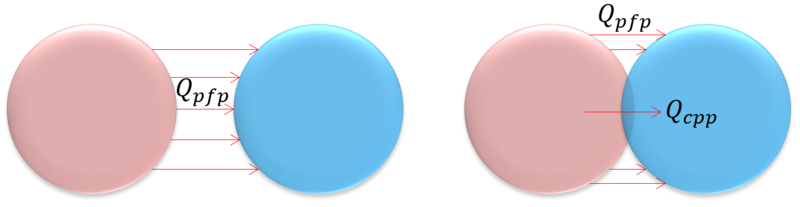

ConductionIndirect (Indirect Heat Conduction) class
Contents
Description
This is a value heterogeneous super-class for the definition of models for the indirect heat conduction between elements.
Indirect heat conduction happens through the thin wedge of interstitial fluid in-between elements, which can be touching each other or not.
In the figure below, Qpfp is the indirect condution (pfp stands for particle-fluid-particle) and Qcpp is the direct conduction (cpp stands for contact particle-particle). The total heat conduction between elements is the sum of both contributions.
This super-class defines abstract methods that must be implemented in the derived sub-classes:

classdef ConductionIndirect < matlab.mixin.Heterogeneous
Constant values
properties (Constant = true, Access = public)
% Types of model
VORONOI_A = uint8(1);
VORONOI_B = uint8(2);
SURROUNDING_LAYER = uint8(3);
% Types of method to compute voronoi cells size
VORONOI_DIAGRAM = uint8(1);
POROSITY_LOCAL = uint8(2);
POROSITY_GLOBAL = uint8(3);
end
Public properties
properties (SetAccess = public, GetAccess = public)
% Identification
type uint8 = uint8.empty; % flag for type of model
% Heat rate results
total_hrate double = double.empty; % resulting heat rate
end
Constructor method
methods
function this = ConductionIndirect(type)
if (nargin > 0)
this.type = type;
end
end
end
Default sub-class definition
methods (Static, Access = protected)
function defaultObject = getDefaultScalarElement
defaultObject = ConductionIndirect_VoronoiA;
end
end
Abstract methods: implemented in derived sub-classes
methods (Abstract)
%------------------------------------------------------------------
this = setDefaultProps(this);
%------------------------------------------------------------------
% Set parameters that are fixed throughout the whole analysis
% (suposed to be called in thermal analysis).
this = setFixParams(this,interact,drv);
%------------------------------------------------------------------
% Set parameters that are constant over the interaction lifetime
% (suposed to be called in thermomechanical analysis).
this = setCteParams(this,interact,drv);
%------------------------------------------------------------------
this = evalHeatRate(this,interact,drv);
end
end